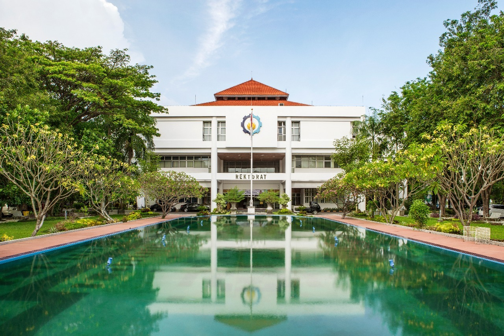
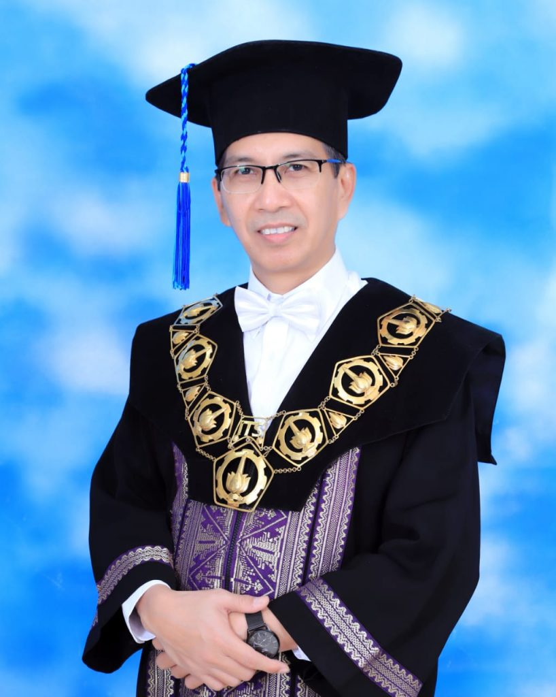
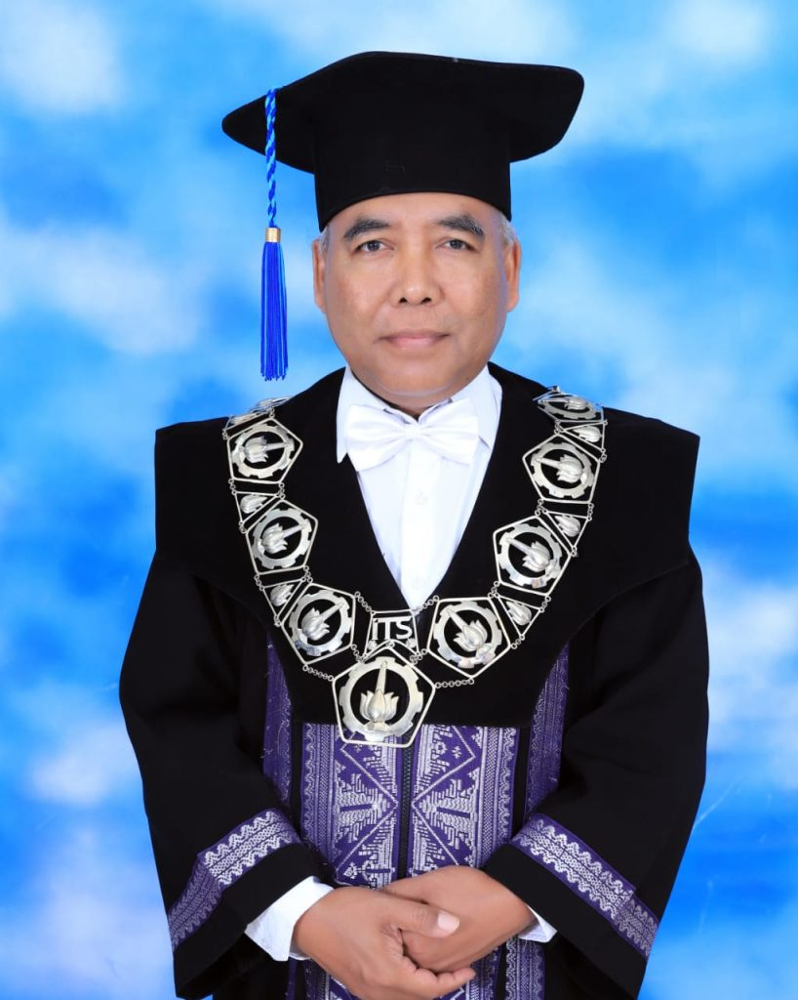
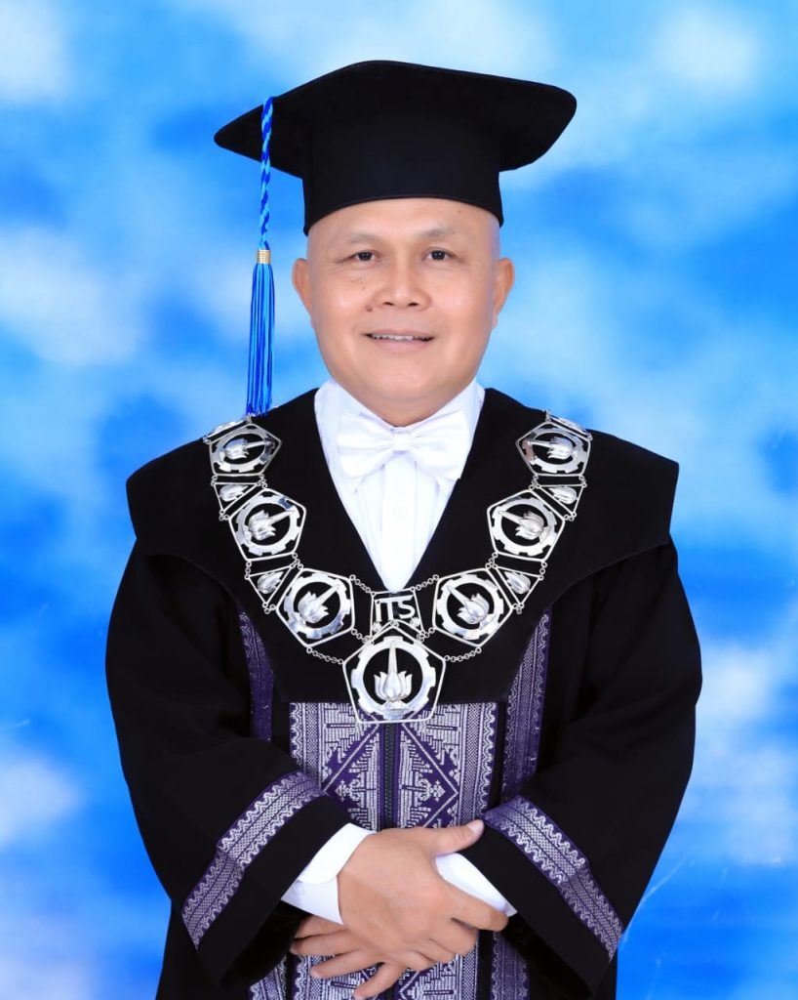
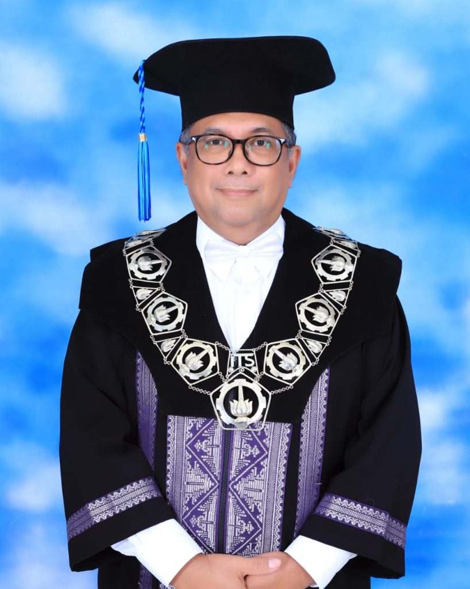
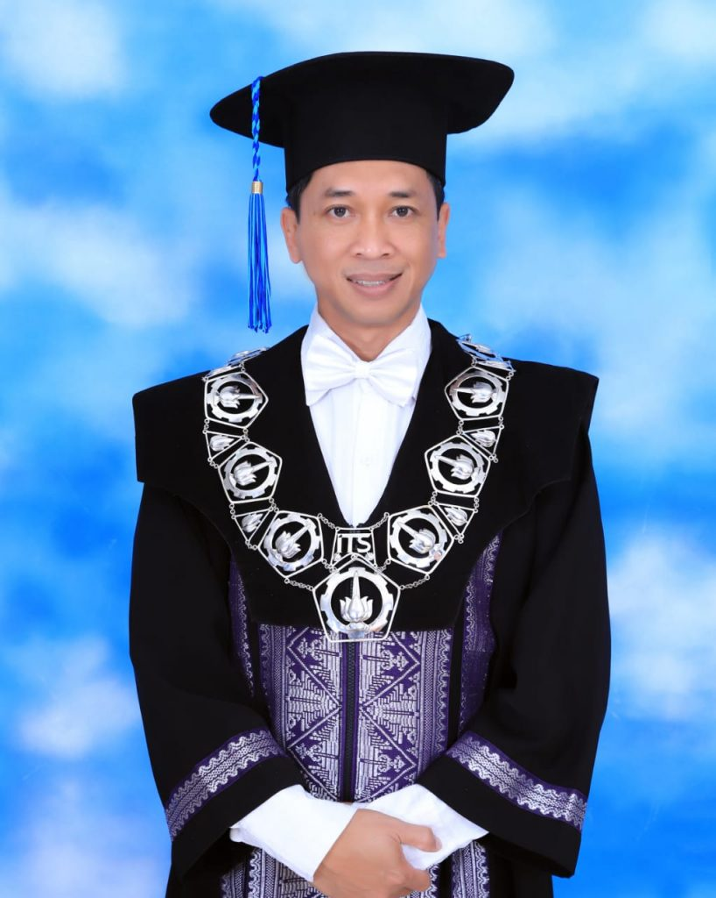
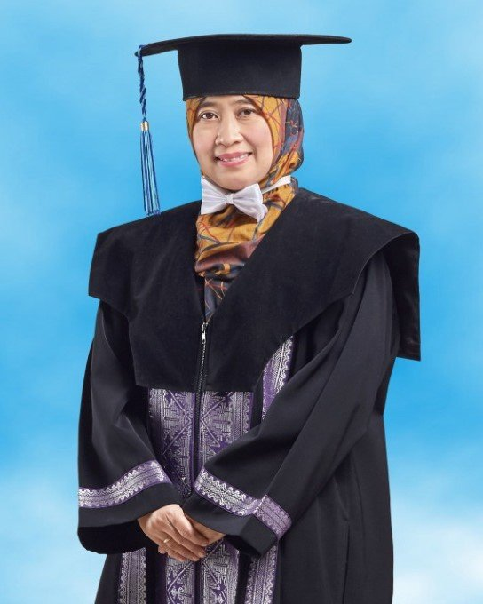

Sejarah

Institut Teknologi Sepuluh Nopember (ITS) didirikan pada tanggal 10 November 1957 sebagai Sekolah
Tinggi Teknik (STT) di Surabaya, Jawa Timur, dengan tujuan memenuhi kebutuhan akan tenaga ahli
teknik dalam pembangunan nasional Indonesia pasca-kemerdekaan. Pada tahun 1965, STT Surabaya
ditingkatkan statusnya menjadi Institut Teknologi (IT) dan berganti nama menjadi Institut Teknologi
Sepuluh Nopember, mengambil nama dari tanggal pendiriannya.
Sejak itu, ITS terus berkembang menjadi
salah satu institut teknologi terkemuka di Indonesia dengan fokus pada bidang teknik dan sains.
Berbagai program studi ditawarkan di berbagai fakultas, seperti Fakultas Teknik Elektro, Fakultas
Teknik Sipil dan Lingkungan, dan Fakultas Teknik Mesin dan Dirgantara. Lulusan ITS telah memberikan
kontribusi signifikan di berbagai bidang, baik di dalam maupun di luar negeri, sementara institut
tersebut terus aktif dalam penelitian dan pengembangan teknologi untuk mendukung pembangunan dan
kemajuan Indonesia.
Pimpinan ITS
Untuk menjadi Universitas kelas dunia, Institut Teknologi Sepuluh Nopember (ITS) dipimpin oleh orang
luar biasa di jajaran Pimpinan ITS untuk mencapai tujuannya dan mengelola ITS sehari-hari. Para
pimpinan ITS adalah orang-orang yang terpilih dan dipercaya oleh seluruh mahasiswa, aktivis
akademik, dan pegawai ITS. Tentunya dalam melaksanakan tugasnya pimpinan ITS mendapatkan beban berat
namun dengan visi misi dan bantuan dari kampus perjuangan maka menjadi kampus kelas dunia bukan
tidak mungkin akan terwujud.
Rektor Institut Teknologi Sepuluh Nopember (ITS)

PROF. DR. IR. MOCHAMAD ASHARI, M. ENG., IPU, ASEAN. ENG.
Wakil Rektor Bidang Akademik dan Kemahasiswaan

PROF. DR. IR. ADI SOEPRIJANTO, M.T.
Wakil Rektor Bidang Perencanaan, Keuangan, dan Sarana Prasarana

IR. MAS AGUS MARDYANTO, M.E., PH.D.
Wakil Rektor Bidang Sumber Daya Manusia, Organisasi, dan Teknologi Sistem Informasi

PROF. DR. ENG. IR. AHMAD RUSDIANSYAH, M.ENG.
Wakil Rektor Bidang Riset, Inovasi, Kerjasama, dan Kealumnian

BAMBANG PRAMUJATI, S.T., M.SC.ENG., PH.D.
Sekretaris Institut

DR. IR. UMI LAILI YUHANA, S.KOM., M.SC., CRP, CIISA.
Fakultas
ITS memiliki delapan fakultas dan satu sekolah dengan bidang ilmu strategis sebagai pusat keunggulan
bagi pengajaran ilmu pengetahuan, teknologi dan desain di Indonesia.
Fakultas Teknik Sipil Perencanaan dan Kebumian (FTSPK)
Fakultas Teknik Sipil Perencanaan dan Kebumian (FTSPK) di ITS adalah hasil dari restrukturisasi
fakultas, mengikuti perubahan dalam rumpun ilmu dan kebutuhan pasar. Terdiri dari enam
Departemen, yaitu Teknik Sipil, Arsitektur, Teknik Lingkungan, Perencanaan Wilayah Kota, Teknik
Geomatika, dan Teknik Geofisika, setiap departemen di FTSPK didesain untuk mendukung visi ITS
sebagai World Class University dan meningkatkan kontribusi nasional. FTSPK menawarkan lulusan
berkualitas tinggi dengan kompetensi yang sesuai dengan kebutuhan pasar, masing-masing dengan
keunggulan uniknya sendiri.
Fakultas Sains dan Analitika Data (FSAD)
Fakultas Sains dan Analitika Data (FSAD) di ITS memiliki sejarah panjang sejak berdirinya
sebagai Fakultas Ilmu Pasti dan Ilmu Alam (FIPIA) pada tahun 1965, kemudian menjadi FMIPA pada
tahun 1983. FMIPA tumbuh dengan tambahan departemen seperti Statistika pada tahun 1983 dan
Biologi pada tahun 1998. Pada November 2018, FMIPA terbagi menjadi dua fakultas, yakni FMKSD dan
Fakultas Sains. Namun, pada tahun 2020, kedua fakultas tersebut bersatu kembali menjadi FSAD
untuk menjawab tantangan Industri 4.0 dan mendukung visi ITS sebagai universitas bereputasi
internasional.
Fakultas Teknologi Industri dan Rekayasa Sistem (FTIRS)
Industri di Indonesia berkembang pesat dengan sekitar 24.500 industri terdaftar di Kementerian
Perindustrian hingga 2019, serta lebih dari 100 kawasan industri dengan luas mencapai 2.267
hektar. Fakultas Teknologi Industri dan Rekayasa Sistem di ITS memiliki departemen yang mencakup
Teknik Mesin, Teknik Kimia, Teknik Fisika, Teknik Industri, Teknik Material, dan Metalurgi, yang
strategis untuk memenuhi kebutuhan industri dengan sumber daya alam yang melimpah di Indonesia.
Fakultas Desain Kreatif dan Bisnis Digital (FDKBD)
Perkembangan teknologi seperti Artificial Intelligence dan Internet of Things (IoT) memerlukan
kemampuan adaptasi tinggi dari manusia. Fakultas CREABIZ menekankan kreativitas, inovasi, dan
kemampuan manajerial dengan pendekatan design thinking untuk mengantisipasi perubahan teknologi.
Ini penting karena kreativitas adalah aspek manusiawi yang tidak dapat digantikan oleh mesin.
Tujuannya adalah kesejahteraan manusia dan lingkungan.
Fakultas Teknologi Kelautan (FTK)
Fakultas Teknologi Kelautan (FTK) ITS, didirikan sesuai Keputusan Presiden No. 58 tahun 1982,
merupakan pengembangan dari Fakultas Teknik Perkapalan ITS yang berdiri sejak tahun 1960. FTK
memiliki program sarjana dan pascasarjana dengan fokus pada pengembangan ilmu teknologi kelautan
untuk pembangunan maritim yang berkelanjutan di kawasan Asia Pasifik. Terdapat empat Departemen
di FTK, yaitu Teknik Perkapalan, Teknik Sistem Perkapalan, Teknik Kelautan, dan Teknik
Transportasi Laut, serta Program Pascasarjana Teknologi Kelautan dan Teknik Sistem Perkapalan.
FTK berkomitmen mendukung Indonesia sebagai poros maritim dunia dengan laboratorium terlengkap
dan kontribusi dalam penelitian serta pengabdian kepada masyarakat. Departemen-departemen
tersebut mencakup beragam bidang studi yang meliputi rekayasa kapal, sistem perkapalan, teknik
kelautan, dan transportasi laut.
Fakultas Teknologi Elektro dan Informatika Cerdas (FTEIC)
Fakultas Teknologi Elektro dan Informatika Cerdas (F-Electics) adalah fakultas unggulan di ITS
yang didirikan sebagai gabungan dari Fakultas Teknologi Informasi dan Komunikasi (FTIK) dan
Fakultas Teknologi Elektro (FTE). F-Electics yang terdiri dari enam departemen serta sepuluh
program studi untuk S1 ini memiliki lebih dari 2500 mahasiswa baik di tingkat S1, S2 ataupun S3
dengan visi membentuk sumber daya manusia berkarakter, berbudi unggul serta berkelas dunia dalam
bidang teknologi elektro, sistem informasi, biomedik, komputer, informatika dan teknologi
informasi.
Fakultas Vokasi
Fakultas Vokasi ITS memiliki 6 Departemen dengan 8 Program Studi Sarjana Terapan dan 1 Program
Studi Magister Terapan. Program Sarjana Terapan meliputi Teknologi Rekayasa Manufaktur,
Teknologi Rekayasa Konversi Energi, Teknologi Rekayasa Pengelolaan dan Pemeliharaan Bangunan
Sipil, Teknologi Rekayasa Konstruksi Bangunan Air, Teknologi Rekayasa Otomasi, Teknologi
Rekayasa Kimia Industri, Rekayasa Teknologi Instrumentasi, dan Statistika Bisnis. Program
Magister Terapan yang ditawarkan adalah Rekayasa Perawatan dan Restorasi Bangunan Sipil.
Sekolah Ilmu Manajemen dan Teknologi (SIMT)
SIMT (Sekolah Ilmu Manajemen dan Teknologi) didirikan oleh ITS pada tahun 2021 dengan tata
kelola yang diatur oleh Peraturan Rektor nomor 11 tahun 2021. Sekolah ini mengelola beberapa
program studi pada tingkat pascasarjana dan Pendidikan bersertifikat. Program studi yang
dikelola meliputi Doktor Manajemen Teknologi (beroperasi sejak 2020), Magister Manajemen
Teknologi (beroperasi sejak 1996), Magister Inovasi Sistem dan Teknologi (menerima mahasiswa
mulai 2022), dan Program Profesi Insinyur. Program-program ini dirancang terutama untuk para
profesional yang dapat mengejar pendidikan sambil bekerja.
Fakultas Kesehatan dan Kedokteran (FKK)
Fakultas Kesehatan dan Kedokteran (FKK) saat ini telah didirikan dengan Peraturan Rektor ITS
Nomor 2 Tahun 2023 sebagai upaya meningkatkan kontribusi ITS secara nasional dan internasional
dalam bidang kedokteran dan kesehatan. FKK saat ini memiliki 3 program studi, yaitu Program
Studi Sarjana Teknologi Kedokteran, Program Studi Sarjana Kedokteran, dan Program Studi
Pendidikan Profesi Dokter.
Disclaimer
Website ini bukan merupakan website resmi Institut Teknologi Sepuluh Nopember. Website ini dibuat
dengan tujuan memenuhi tugas dari Dicoding. Informasi yang terdapat pada website ini diambil dari
berbagai sumber, seperti situs resmi ITS. Informasi yang
terdapat pada website ini mungkin tidak akurat, tidak lengkap, dan/atau tidak terkini. Penggunaan
informasi yang terdapat pada website ini sepenuhnya menjadi tanggung jawab pengguna.